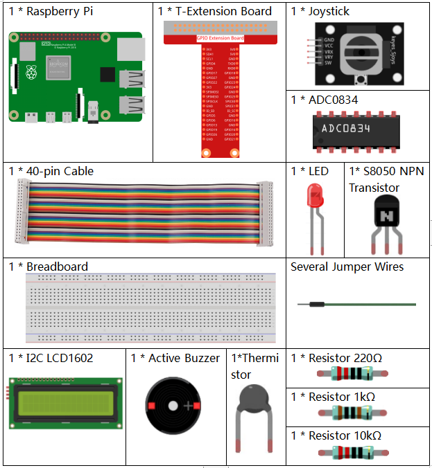

注釈
こんにちは、SunFounderのRaspberry Pi & Arduino & ESP32愛好家コミュニティへようこそ！Facebook上でRaspberry Pi、Arduino、ESP32についてもっと深く掘り下げ、他の愛好家と交流しましょう。
参加する理由は？
エキスパートサポート：コミュニティやチームの助けを借りて、販売後の問題や技術的な課題を解決します。
学び＆共有：ヒントやチュートリアルを交換してスキルを向上させましょう。
独占的なプレビュー：新製品の発表や先行プレビューに早期アクセスしましょう。
特別割引：最新製品の独占割引をお楽しみください。
祭りのプロモーションとギフト：ギフトや祝日のプロモーションに参加しましょう。
👉 私たちと一緒に探索し、創造する準備はできていますか？[ここ]をクリックして今すぐ参加しましょう！
3.1.8 過熱モニター
概要
あなたは過熱監視デバイスを作成したいかもしれません。例えば、工場内で回路の過熱がある場合にアラームと機械の自動シャットダウンをしたい場合です。このプロジェクトでは、サーミスタ、ジョイスティック、ブザー、LED、およびLCDを使用して、しきい値が調整可能なスマートな温度監視デバイスを作成します。
必要なコンポーネント
このプロジェクトには、以下のコンポーネントが必要です。
{kind=link}
回路図

実験手順
ステップ 1: 回路を組み立てます。

ステップ 2: コードのフォルダに移動します。
cd ~/davinci-kit-for-raspberry-pi/python-pi5
ステップ 3: 実行可能ファイルを実行します。
sudo python3 3.1.8_OverheatMonitor.py
コードが実行されると、現在の温度と高温閾値 40 が I2C LCD1602 に表示されます。現在の温度が閾値を超える場合、ブザーとLEDがアラームを鳴らします。
ここでの ジョイスティック は、高温閾値を調整するためのボタンです。 ジョイスティック をX軸およびY軸の方向に切り替えると（上下に動かすと）現在の高温閾値を調整できます。 ジョイスティック をもう一度押すと、閾値が初期値にリセットされます。
注釈
エラーが発生した場合、
FileNotFoundError: [Errno 2] No such file or directory: '/dev/i2c-1'、I2Cを有効にするために I2C設定 を参照してください。ModuleNotFoundError: No module named 'smbus2'エラーが発生した場合は、sudo pip3 install smbus2を実行してください。エラー
OSError: [Errno 121] Remote I/O errorが表示された場合、モジュールが誤って配線されているか、モジュールが壊れていることを意味します。コードと配線が正常であるにもかかわらず、LCDにコンテンツが表示されない場合、裏側のポテンショメーターを回してコントラストを調整できます。
警告
エラー メッセージ RuntimeError: Cannot determine SOC peripheral base address が表示された場合は、 「gpiozero」が動作しない場合。 を参照してください。
コード
注釈
以下のコードを 修正/リセット/コピー/実行/停止 できます。ただし、それより前に、 davinci-kit-for-raspberry-pi/python のようなソースコードのパスに移動する必要があります。コードを修正した後、効果を確認するために直接実行できます。
#!/usr/bin/env python3
import LCD1602
from gpiozero import LED, Buzzer, Button
import ADC0834
import time
import math
# ジョイスティックボタン、ブザー、LEDの初期化
Joy_BtnPin = Button(22)
buzzPin = Buzzer(23)
ledPin = LED(24)
# 初期の高温閾値を設定
upperTem = 40
# ADCとLCDモジュールのセットアップ
ADC0834.setup()
LCD1602.init(0x27, 1)
def get_joystick_value():
"""
ジョイスティックの値を読み取り、ジョイスティックの位置に基づいて変更値を返します。
"""
x_val = ADC0834.getResult(1)
y_val = ADC0834.getResult(2)
if x_val > 200:
return 1
elif x_val < 50:
return -1
elif y_val > 200:
return -10
elif y_val < 50:
return 10
else:
return 0
def upper_tem_setting():
"""
ジョイスティックの入力を使用して高温閾値を調整し、LCDに表示します。
"""
global upperTem
LCD1602.write(0, 0, '上限調整: ')
change = int(get_joystick_value())
upperTem += change
strUpperTem = str(upperTem)
LCD1602.write(0, 1, strUpperTem)
LCD1602.write(len(strUpperTem), 1, ' ')
time.sleep(0.1)
def temperature():
"""
センサーから現在の温度を読み取り、摂氏で返します。
"""
analogVal = ADC0834.getResult()
Vr = 5 * float(analogVal) / 255
Rt = 10000 * Vr / (5 - Vr)
temp = 1 / (((math.log(Rt / 10000)) / 3950) + (1 / (273.15 + 25)))
Cel = temp - 273.15
return round(Cel, 2)
def monitoring_temp():
"""
現在の温度と上限温度閾値を監視および表示します。温度が上限を超える場合、ブザーとLEDが作動します。
"""
global upperTem
Cel = temperature()
LCD1602.write(0, 0, '温度: ')
LCD1602.write(0, 1, '上限: ')
LCD1602.write(6, 0, str(Cel))
LCD1602.write(7, 1, str(upperTem))
time.sleep(0.1)
if Cel >= upperTem:
buzzPin.on()
ledPin.on()
else:
buzzPin.off()
ledPin.off()
# メイン実行ループ
try:
lastState = 1
stage = 0
while True:
currentState = Joy_BtnPin.value
# 設定モードと監視モードを切り替えます
if currentState == 1 and lastState == 0:
stage = (stage + 1) % 2
time.sleep(0.1)
LCD1602.clear()
lastState = currentState
if stage == 1:
upper_tem_setting()
else:
monitoring_temp()
except KeyboardInterrupt:
# クリーンアップして終了
LCD1602.clear()
ADC0834.destroy()
代码解释
このセクションでは、プロジェクトに必要なライブラリをインポートします。
LCD1602はLCDディスプレイ用、gpiozeroはLED、ブザー、およびボタン用のクラスを提供します。ADC0834はアナログデジタル変換用で、timeおよびmathは時間関連の関数と数学操作のためのPython標準ライブラリです。#!/usr/bin/env python3 import LCD1602 from gpiozero import LED, Buzzer, Button import ADC0834 import time import math
ここで、ジョイスティックのボタン、ブザー、LEDを初期化します。
Button(22)はGPIOピン22に接続されたボタンオブジェクトを作成します。Buzzer(23)とLED(24)はそれぞれGPIOピン23と24にブザーとLEDを初期化します。# ジョイスティックボタン、ブザー、LEDの初期化 Joy_BtnPin = Button(22) buzzPin = Buzzer(23) ledPin = LED(24)
初期の上限温度を設定し、ADCとLCDモジュールを初期化します。LCDはアドレス（
0x27）とモード（1）で初期化されます。# 初期の上限温度閾値を設定 upperTem = 40 # ADCとLCDモジュールのセットアップ ADC0834.setup() LCD1602.init(0x27, 1)
この関数はジョイスティックのXとYの値をADC0834を使用して読み取り、ジョイスティックの位置に基づいて変更値を返します。この変更値は温度の閾値を調整するために使用されます。
def get_joystick_value(): """ ジョイスティックの値を読み取り、ジョイスティックの位置に基づいて変更値を返します。 """ x_val = ADC0834.getResult(1) y_val = ADC0834.getResult(2) if x_val > 200: return 1 elif x_val < 50: return -1 elif y_val > 200: return -10 elif y_val < 50: return 10 else: return 0
ジョイスティックの入力を使用して上限温度を調整し、新しい閾値をLCDに表示します。
def upper_tem_setting(): """ ジョイスティックの入力を使用して上限温度閾値を調整し、LCDに表示します。 """ global upperTem LCD1602.write(0, 0, '上限調整: ') change = int(get_joystick_value()) upperTem += change strUpperTem = str(upperTem) LCD1602.write(0, 1, strUpperTem) LCD1602.write(len(strUpperTem), 1, ' ') time.sleep(0.1)
センサーから現在の温度を読み取り、摂氏に変換します。
def temperature(): """ センサーから現在の温度を読み取り、摂氏で返します。 """ analogVal = ADC0834.getResult() Vr = 5 * float(analogVal) / 255 Rt = 10000 * Vr / (5 - Vr) temp = 1 / (((math.log(Rt / 10000)) / 3950) + (1 / (273.15 + 25))) Cel = temp - 273.15 return round(Cel, 2)
現在の温度と上限温度閾値を監視し、LCDに表示します。温度が上限を超える場合、ブザーとLEDが作動します。
def monitoring_temp(): """ 現在の温度と上限温度閾値を監視し、LCDに表示します。温度が上限を超える場合、ブザーとLEDが作動します。 """ global upperTem Cel = temperature() LCD1602.write(0, 0, '温度: ') LCD1602.write(0, 1, '上限: ') LCD1602.write(6, 0, str(Cel)) LCD1602.write(7, 1, str(upperTem)) time.sleep(0.1) if Cel >= upperTem: buzzPin.on() ledPin.on() else: buzzPin.off() ledPin.off()
メイン実行ループはジョイスティックボタンの押下に基づいて設定モードと監視モードを切り替えます。設定または温度の監視を継続的に更新します。
# メイン実行ループ try: lastState = 1 stage = 0 while True: currentState = Joy_BtnPin.value # 設定モードと監視モードを切り替える if currentState == 1 and lastState == 0: stage = (stage + 1) % 2 time.sleep(0.1) LCD1602.clear() lastState = currentState if stage == 1: upper_tem_setting() else: monitoring_temp() except KeyboardInterrupt: # クリーンアップして終了 LCD1602.clear() ADC0834.destroy()